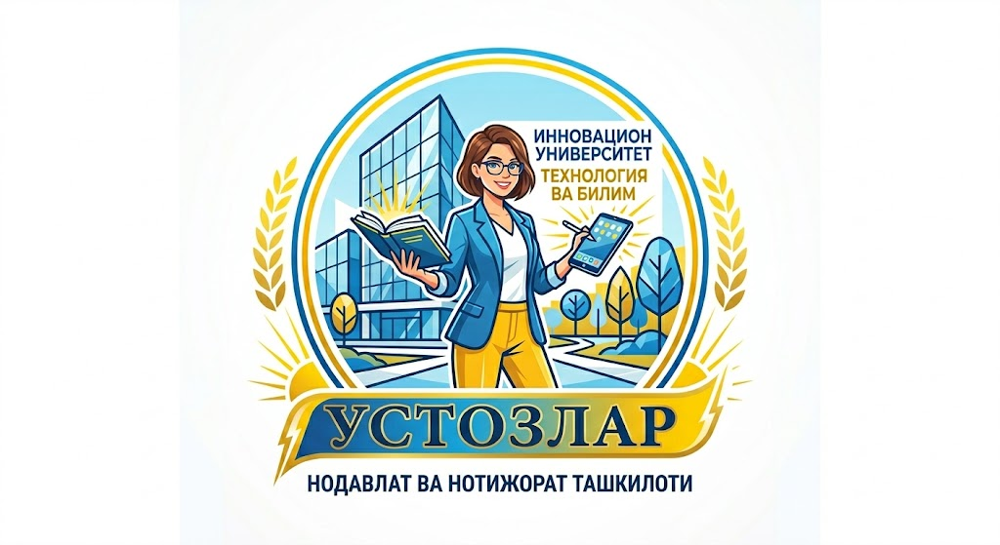

🏛⏰ 2026-йилнинг 4-апрель куни Навоий вилояти "Устозлар" нодавлат ва нотижорат ташкилотининг фаолларидан бири геолог-олим Ҳамид ака Шариповнинг Навоий кончилик ва технологиялар университетининг катта фаоллар залида 80 йиллик юбилейи ва "Шарафли умр йўллари" номли китобининг тақдимоти бўлиб ўтди.
🔥⚡️ Юбиляр НКМК АЖ раҳбарияти томонидан I даражали "Кончилик шуҳрати" кўкрак нишони билан тақдирланди ҳамда Ўзбекистон Фанлар академияси Навоий бўлими томонидан "Фахрий профессор" унвони берилди.